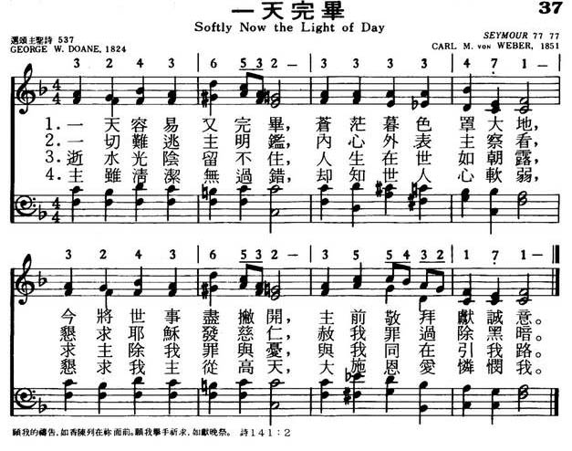

LX1792
Softly Now The Light Of
Day _von
Weber
037一天完毕
颂新
[暮色蒼茫]
|
|
|
|
1 Softly now the light of day
Fades upon my sight away;
Free from care, from labor free,
Lord, I would commune with Thee.
2 Thou, whose all-pervading eye
Naught escapes without, within,
Pardon each infirmity,
Open fault, and secret sin.
3 Soon for me the light of day
Shall forever pass away;
Then, from sin and sorrow free,
Take me, Lord, to dwell with Thee.
4 Thou who, sinless, yet hast known
All of man's infirmity,
Then, from Thine eternal throne,
Jesus, look with pitying eye.
Amen.
Source: African
Methodist Episcopal Church Hymnal #39
|
037一天完毕
1.一天容易又完毕，苍茫暮色罩大地，
今将世事尽撇开，主前敬拜献诚意。
2.一切难逃主明鉴，内心外表主察看，
恳求耶稣发慈仁，赦我罪过除黑暗。
3.逝水光阴留不住，人生在世如朝露，
求主除我罪与忧，与我同在引我路。
4.主虽清洁无过错，却知世人心软弱，
恳求我主从高天，大施恩爱怜悯我。
|
|
https://www.mred365.cn/szxg/7040.html

https://hymnary.org/text/softly_now_the_light_of_day
 |
|
|
|
 Softly
Now The Light Of Day - Christian Hymn & Spiritual Song Lyrics with Orchestral
backing music.
Softly
Now The Light Of Day - Christian Hymn & Spiritual Song Lyrics with Orchestral
backing music.
LX1792
Softly Now The Light Of
Day
037一天完毕
颂新

Tune Information
|
Title: |
SEYMOUR (Weber) |
|
Composer: |
Carl Maria von Weber (1826) |
|
Meter: |
7.7.7.7 |
|
Incipit: |
32436 53233 33471 |
|
Key: |
F
Major |
|
Copyright: |
Public Domain |
|
Short Name: |
Carl Maria von Weber |
|
Full Name: |
Weber, Carl Maria von, 1786-1826 |
|
Birth Year: |
1786 |
|
Death Year: |
1826 |
Carl Maria von
Weber; b. 1786, Oldenburg; d. 1826, London
Evangelical Lutheran
Hymnal, 1908
Words: George Washington Doane (b. May 27, 1799; d.
April ___, 1859)
Music: Seymour, by Carl Maria Friedrich Ernst von Weber (b.
Nov. 18, 1786; d. June 5, 1826)
Links:
Wordwise Hymns (George
Doane)
The Cyber
Hymnal
Note: Von Weber was a classical composer. The hymn tune was taken
from his opera Oberon. As noted in the Cyber Hymnal, the
tune Mercy is also used with this hymn (and
with Holy
Ghost, with Light Divine).
George Doane (1799-1859) was christened George Washington Doane, as
he was born in the year America’s beloved first president died. A
scholar and college professor, in addition he became a bishop in the
Episcopal (or Anglican) denomination. A bishop who succeeded him wrote
of Doane:
“He was a pioneer in the work of education, ahead of his time in
a good many things, and his name is remembered not by the troubles
he was compelled to face, but by his greatness as a man and a
bishop.
Dr. Doane published a book of poetry in 1824 called Songs
by the Way. In the volume was an 1824 hymn poem called “Evening,”
written for St. Mary’s Hall, a girls’ seminary founded by Bishop Doane.
The hymn was headed by the text:
“Let my prayer be set before You as incense, the lifting up of my
hands as the evening sacrifice” (Ps. 141:2).
Sometimes, in the bustle of our busy lives, there’s an almost
constant din falling on our physical ears, all but drowning out the
voice of God to our souls. Filling every waking moment of our days with
sound seems to be the modern trend. And unfortunately, that is often the
adopted norm in the services of the church. Moments of personal
meditation and silent waiting on God must seem to some a boring waste of
time. But in contrast, God says in His Word, “Be still and know that I
am God” (Ps. 46:10).
One of the common events in nature through which God has much to say
to us is sunsets. A sunset marks the end of another day. That is an
appropriate time for reflection. Did we invest its hours and minutes for
God? Or did sinful weakness cause us to stumble, bringing Him dishonour?
As the Lord sought to walk with our first parents in the cool evening of
Eden (Gen. 3:8-9), so He desires to meet with us. But if we, like Adam
and Eve, have failed Him, perhaps we are more reluctant to draw near.
There’s another significance of the sunset as well. It is a picture
and a reminder of death. Just as we speak of the sunset of day, we
sometimes refer to the sunset of life. And there is sometimes about
death a dread of approaching darkness. It is “the valley of the shadow.”
But believers are assured of the presence of the Lord, even then (Ps.
23:4), and of the coming of an even brighter sunrise. He is “the Bright
and Morning Star” (Rev. 22:16). In the dawning of eternal day “the Sun
of Righteousness shall arise with healing in His wings” (Mal. 4:2).
Notice how the hymn gives an atmosphere of intimacy with God, by
using the first person in the opening stanza. Doane’s meditation on the
silent approach of nightfall begins:
CH-1) Softly now the light of day
Fades upon my sight away;
Free from care, from labour free,
Lord, I would commune with Thee.
CH-2) Thou, whose all pervading eye
Naught escapes, without, within,
Pardon each infirmity,
Open fault, and secret sin.
Finally, the hymn makes the connection to life’s final sunset (again
using the first person):
CH-3) Soon for me the light of day
Shall forever pass away;
Then, from sin and sorrow free,
Take me, Lord, to dwell with Thee.
Some hymn books omit CH-4. It does seem to me somewhat anticlimactic,
as CH-3 makes a good ending to the hymn. It may also be poetically
inferior to the first three, but I’ll include it here.
CH-4) Thou who, sinless, yet hast known
All of man’s infirmity;
Then, from Thine eternal throne,
Jesus, look with pitying eye.
Questions:
1) What other times or events, other than sunsets, often prompt us to
introspection–looking back, and looking ahead?
2) What is your favourite evening hymn (or hymn for the closing of a
church service)?
Links:
Wordwise Hymns (George
Doane)
The Cyber
Hymnal
https://wordwisehymns.com/2014/03/31/softly-now-the-light-of-day/
INTRO:
A hymn which talks about the importance of praying in the evening is "Softly Now
the Light of Day" (#20 in Sacred
Selections for the Church). The text was written by George Washington Doane
(1799-1859). It was first published in his 1824 Songs
by the Way, Chiefly Devotional, with Translations and Imitations. Although
other tunes have been used with it, the one (Seymour or Weber) most frequently
found was composed by Carl Maria von Weber, who was born at Eutin, Germany, on
Nov. 18, 1786. The son of a traveling theatrical impressario, he lived during
his boyhood with his family in many places. After studying music with
Michael Haydn at Salzburg and Abt Vogler, he became the conductor of the
Municipal Theater at Breslau in 1804 through Vogler’s influence. Later he held
similar positions at Stuttgart, Prague, and Dresden.
Weber’s greatest fame came from his operas, such as Der
Freischutz, from which the tune used with Benjamin Schmolke’s hymn "My
Jesus, As Thou Wilt" comes, Preciosa, Euryanthe,
and Oberon.
In addition to his operas, he produced two symphonies, several concertos,
masses, a cantata, chamber music, and other miscellaneous pieces. This
particular tune is an arrangement from the opening chorus of his last opera, Oberon,
completed in 1825 and first performed in 1826, just before he died suddenly of
tuberculosis at London, England, on June 4, 1826. The arrangement was made by
Henry Willington Greatores (1813-1858). It first appeared in his 1851 Collection
of Psalm and Hymn Tunes, Chants, Anthems and Sentences for the Use of the
Protestant Episcopal Church in America.
Among hymnbooks published by members of the Lord’s church during the twentieth
century for use in churches of Christ, "Softly Now the Light of Day," usually
with only stanzas 1 through 3, appeared in the 1921 Great
Songs of the Church (No. 1) and the 1937 Great
Songs of the Church No. 2 both edited by E. L. Jorgenson; the
1935 Christian
Hymns (No. 1) edited by L. O. Sanderson; and the 1963 Christian
Hymnal edited by J. Nelson Slater. Today it may be found in
the 1971 Songs
of the Church and the 1990 Songs
of the Church 21st C. Ed. both edited by Alton H. Howard; the
1986 Great
Songs Revised edited by Forrest M. McCann; and the 1992 Praise
for the Lord edited by John P. Wiegand; in addition to Sacred
Selections and the 2007 Sacred
Songs of the Church edited by William D. Jeffcoat. Most of
these books, and many others used among us, have had this same tune with Jane E.
Leeson’s hymn "Savior, Teach Me Day by Day."
The song compares the closing of the day on earth to the eventual closing of our
lives on earth.
I. Stanza 1 looks to the time when the light of day fades
"Softly now the light of day Fades upon my sight away;
Free from care, from labor free, Lord, I would commune with Thee."
A. God has ordained that each day man should go out to his work to labor until
evening when the light of day fades: Ps. 104:19-23
B. When evening comes and we are done with work, we are free from care and
labor and can rest: Eccl. 5:12
C. However, there is not a better time to commune with God about the activities
of the day than at night as we go to bed: Ps. 16:7
II. Stanza 2 encourages us to call upon God at the end of day
"Thou, whose all-pervading eye Naught escapes, without, within,
Pardon each infirmity, Open fault, and secret sin."
A. From God’s all pervading eye naught escapes, without or within, because God
knows all: Ps. 139:1-6
B. He knows our sins, and we need His pardon: Exo. 34:9
C. We even need cleansing from our secret sins and faults: Ps. 19:12
III. Stanza 3 contemplates the time when the light of earth’s day passes forever
in death
"Soon for me the light of day May forever pass away;
Then, from sin and sorrow free, Take me, Lord, to dwell with Thee."
A. Just as the light of day fades each evening, so someday, and it will be
sooner than later, the light of earth’s day will forever pass away from us in
death: Heb. 9:27
B. Then, the righteous will be free from sin and sorrow and, as we rest
physically at night from the day’s work, so we will rest from our labors: Rev.
14:13
C. And our ultimate hope is to dwell forever with the Lord: Ps. 23:6
IV. Stanza 4 reminds us that when that time comes we shall stand before God in
judgment
"Thou, who, sinless, yet has known All of man’s infirmity,
Then from Thine eternal throne, Jesus, look with pitying eye."
A. Yet, before we reach our final dwelling place, we must have to do with Him
who has known all of man’s infirmity: Heb. 4:13
B. At the final day, each of us must stand before His eternal throne of
judgment: Matt. 25:31-33, 2 Cor. 5:10
C. But if we have obeyed Him, we can expect that He will look on us with
pitying eye and grant us mercy in that day: 2 Tim. 1:16-18
CONCL.:
Doane was especially known for his devotional hymns, including "Thou Art the
Way" and "Fling Out the Banner." As Albert E. Bailey noted concerning this hymn,
"There is something about the fading beauty of sunsset that deeply stirs the
human spirit. It somehow gives pause to our feverish activity and turns out
thoughts both inward to our deepest nature and outward till our spirit merges
with the heart of the universe….This seems to be the experience recorded in this
hymn." Produced for St. Mary’s Hall, a girls’ school founded by Doane, these
words are designed to turn our thoughts toward God and eternity when ends
"Softly Now the Light of Day."
https://hymnstudiesblog.wordpress.com/2009/05/21/quotsoftly-now-the-light-of-dayquot/
維基百科，自由的百科全書
|
卡爾·馬利亞·馮·韋伯 |
 |
|
原文名 |
Carl
Maria von Weber |
|
出生 |
1786年11月18日或19日
神聖羅馬帝國呂貝克主教區奧伊廷 |
|
逝世 |
1826年6月5日（39歲）
英國倫敦 |
|
國籍 |
德國 |
|
知名作品 |
歌劇《自由射手》《歐麗安特》《奧伯龍》，三部單簧管協奏曲（其一為小協奏曲），鋼琴《邀舞》 |
|
|
|
所屬時期/樂派 |
古典主義，浪漫主義 |
|
擅長類型 |
歌劇，協奏曲，室內樂，鋼琴獨奏曲 |
|
|
卡爾·馬利亞·弗里德里希·恩斯特·馮·韋伯（德語：Carl
Maria Friedrich Ernst von Weber，1786年11月18日或19日－1826年6月5日），德國作曲家。
韋伯從小接受良好的音樂薰陶，母親是一名歌手，父親是巡迴劇團的經理，他隨父親在各地旅行的時候積累了豐富的生活經驗並接觸到繁多的民間音樂，這成為他後來所創作的民族主義題材歌劇的源泉。10歲時跟隨海頓的弟弟米夏埃爾學習作曲，1798年去慕尼黑深造，之後定居維也納。從1804年開始，先後在布雷斯勞、布拉格和德雷斯頓等地擔任指揮。1824年為皇家歌劇院寫作《奧伯龍》，兩年後首演時作曲家親往倫敦指揮，但經過長途的勞累他的身體情況惡化，於首演兩個月後因肺病客死異鄉。
著名作品[編輯]
-
1820年的《魔彈射手》是他最成功的歌劇，取材於阿培爾（Johann
August Apel）的小說，被認為是德國第一部浪漫主義歌劇。另外還有1823年的《歐麗安特》，這部歌劇中沒有口白，音樂持續不斷，雖然腳本比較晦澀，但完全地複製出中世紀騎士社會的氣氛。
-
韋伯十分鍾愛鋼琴的音色，因此寫作了許多優美的鋼琴曲，其中要數1819年獻給其妻子的鋼琴獨奏曲《邀舞》最為出色[註
1]。
外部連結[編輯]
https://zh.wikipedia.org/wiki/%E5%8D%A1%E5%B0%94%C2%B7%E9%A9%AC%E5%88%A9%E4%BA%9A%C2%B7%E5%86%AF%C2%B7%E9%9F%A6%E4%BC%AF